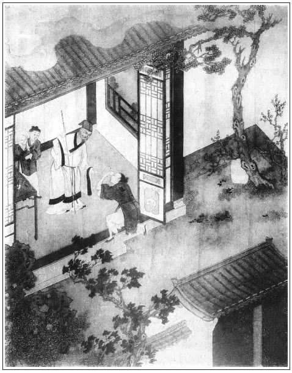

張回此回寫敬濟浮浪之報，不必言矣。然而作者之意不在敬濟，猶在玉樓也。夫此回文字，乃在玉樓，誰其信之哉？然而非予好為奇論也，請看「王杏庵」三字何居。
夫上回頓住玉樓，接寫大姐死等情，總言敬濟之敗。此回又接寫我若得志，固不與炎涼市井較量，亦不敢以富貴驕人，亦不敢以名心為累，然而尤不肯作自了漢，貪位慕祿，不做好事，見義不為也。故又寫杏庵義恤一回，又自恐為義不終，故必至送敬濟作任道士徒弟而止。蓋言我恤人，必當使之復全人道，以揚其祖宗之美而後已也，故又名敬濟為宗美也。此作者一片大經綸。真是看天地倫物，皆吾一體，不肯使一夫一婦不得其所，不化於道者也。是故晏者，安也，入晏公廟，遇欲安其身，為任道士徒，則欲收其心。我之所以為古道者如此。而無如今之為道則不然，一味貪淫好色，我費多少心力，安插其身，收束其心，不勾他一夜酒杯，遂使金蓮之三章約，復出於殘莖芰荷之口。甚矣，今道之移人如是也。
今道者，即所謂金道士也。蓋後二十回內，總是作者寓己之學問經濟以立言，又不特文章之妙絕今古也。
晏公廟任道作徒，可為安其身心矣。無端今道引入，又致舊性復散。夫「陳」者，舊性也。「三者」，「散」之別音也。是名陳三。故有陳三而馮金寶又來矣。
此回不特寫敬濟浮浪之報，竟注寫玉樓之失，妙絕千古。
詩曰：
階前潛制淚，眾裡自嫌身。
氣味如中酒，情懷似別人。
暖風張樂席，晴日看花塵。
儘是添愁處，深居乞過春。

話說陳敬濟，自從西門大姐死了，被吳月娘告了一狀，打了一場官司出來，唱的馮金寶又歸院中去了，剛刮剌出個命兒來。繡旁足矣。房兒也賣了，張夾一了。本錢兒也沒了，張夾一了。頭面也使了，張夾一了。傢伙也沒了。張夾一了。又說陳定在外邊打發人，克落了錢，把陳定也攆去了。張夾一了。家中日逐盤費不周，坐吃山空，不時往楊大郎家中，問他這半船貨的下落。一日，來到楊大郎門首，叫聲：「楊大郎在家不在？」不想楊光彥拐了他半船貨物，一向在外，賣了銀兩，四散躲閃。及打聽得他家中吊死了老婆，他丈母縣中告他，坐了半個月監，這楊大郎就驀地來家住著。聽見敬濟上門叫他，問貨船下落，一徑使兄弟楊二風出來，張夾又是一個假兄弟之親兄弟出來，與二搗鬼作映。然則人各有親兄弟，何必捨親而結假也哉？反問敬濟要人：「你把我哥哥叫的外面做買賣，這幾個月通無音信，不知拋在江中，推在河內，害了性命，你倒還來我家尋貨船下落？人命要緊，你那貨物要緊？」這楊二風平昔是個刁徒潑皮，耍錢搗子，胳膊上紫肉橫生，胸前上黃毛亂長，是一條直率光棍。走出來一把扯住敬濟，就問他要人。那敬濟慌忙掙開手跑出回家來。張夾呆後生技倆如此。這楊二風故意拾了塊三尖瓦楔，將頭顱礸破，血流滿面，趕將敬濟來，罵道：「我㒲你娘娘！我見你家甚麼銀子來？你來我屋裡放屁，吃我一頓好拳頭。」那敬濟金命水命，走投無命，奔到家，把大門關閉如鐵桶相似，張夾技倆如此。由著楊二風牽爹娘，罵父母，拿大磚砸門，只是鼻口內不敢出氣兒。又況才打了官司出來，夢條繩蛇也害怕，只得含忍過了。正是：
嫩草怕霜霜怕日，惡人自有惡人磨。
不消幾時，把大房賣了，找了七十兩銀子，典了一所小房，在僻巷內居住。張夾又一了。落後兩個丫頭，賣了一個重喜兒，張夾又一了。只留著元宵兒和他同鋪歇。又過了不上半月，把小房倒騰了，卻去賃房居住。張夾又一了。陳安也走了，家中沒營運，元宵兒也死了，止是單身獨自，傢伙桌椅都變賣了，只落得一貧如洗。繡眉富貴家子弟，父兄死後，你不讀書，任聰明乖巧，亦必流落至此，非異事也。未幾，房錢不給，鑽入冷鋪內存身。張夾此時所為百當也。花子見他是個富家勤兒，生得清俊，叫他在熱炕上睡，與他燒餅兒吃。張夾語中有味。有當夜的過來教他頂火夫，打梆子搖鈴。
那時正值臘月，殘冬時分，天降大雪，吊起風來，十分嚴寒。這陳敬濟打了回梆子，打發當夜的兵牌過去，不免手提鈴串了幾條街巷。又是風雪，地下又踏著那寒冰，凍得聳肩縮背，戰戰兢兢。臨五更雞叫，只見個病花子倘在牆底下，恐怕死了，總甲分付他看守著，尋了把草叫他烤。這敬濟支更一夜，沒曾睡，就歪下睡著了。不想做了一夢，夢見那時在西門慶家，怎生受榮華富貴，和潘金蓮勾搭，頑耍戲謔，從睡夢中就哭醒來。張夾此處醒人何限，所以必作敬濟一人為此。眾花子說：「你哭怎的？」這敬濟便道：「你眾位哥哥，我的苦楚，你怎得知？
頻年困苦痛妻亡，身上無衣口絕糧。
馬死奴逃房又賣，隻身獨自在他鄉。
朝依肆店求遺饌，暮宿莊園倚敗牆。
只有一條身後路，冷鋪之中去打梆。」
陳敬濟晚夕在冷鋪存身，白日間街頭乞食。清河縣城內有一老者，姓王名宣，字廷用，張夾自言本為朝廷可用之財。年六十餘歲，家道殷實，為人心慈，仗義疏財，專一濟貧拔苦，好善敬神。所生二子，皆當家成立。長子王乾，張夾乾為三陽，乃伏羲卦中長子。襲祖職為牧馬所掌印正千戶；次子王震，張夾震為二陽，乃伏羲卦中次子，俱用先天也。充為府學庠生。老者門首搭了個主管，開著個解當鋪兒。每日豐衣足食，閒散無拘，在梵宇聽經，琳宮講道。無事在家門首施藥救人，拈素珠念佛。因後園中有兩株杏樹，道號為杏庵居士。張眉玉樓才引即接杏庵出現，明言先為仇家所辱，甘為妾婦而不辭。一旦天日復見，我才復可為王廷宣用，且能救濟天下，故杏庵即接玉樓，蓋二人皆作者一人自寓也。張夾可知用杏庵，所以反覆著明玉樓為作者自喻也。
一日，杏庵頭戴重簷幅巾，身穿水合道服，在門首站立。只見陳敬濟打他門首過，向前扒在地下磕了個頭。忙的杏庵還禮不迭，說道：「我的哥，你是誰？老拙眼昏，不認的你。」這敬濟戰戰兢兢，站立在旁邊說道：「不瞞你老人家，小人是賣松槁陳洪兒子。」老者想了半日，說：「你莫不是陳大寬的令郎麼？」繡眉陳洪號到此點出，冷甚。張夾陳洪號自此方出，所以深明敬濟之丑也。因見他衣服襤褸，形容憔悴，說道：「賢侄，你怎的弄得這般模樣？」便問：「你父親、母親可安麼？」敬濟道：「我爹死在東京，我母親也死了。」杏庵道：「我聞得你在丈人家住來？」敬濟道：「家外父死了，外母把我攆出來。他女兒死了，告我到官，打了一場官司。把房兒也賣了，有些本錢兒，都吃人坑了，一向閒著沒有營生。」杏庵道：「賢侄，你如今在那裡居住？」敬濟半日不言語，說：「不瞞你老人家說，如此如此。」繡旁吞吐妙甚。杏庵道：「可憐，賢侄你原來討吃哩。想著當初，你府上那樣根基人家。我與你父親相交，賢侄，你那咱還小哩，才紮著總角上學堂，怎就流落到此地位？可傷，可傷。你還有甚親家？也不看顧你看顧兒。」敬濟道：「正是。俺張舅那裡，一向也久不上門，不好去的。」問了一回話，老者把他讓到裡面客位裡，令小廝放桌兒，擺出點心嗄飯來，教他盡力吃了一頓。見他身上單寒，拿出一件青布綿道袍兒，一頂氈帽，又一雙氈襪、綿鞋，又秤一兩銀子，五百銅錢，張夾如此方使一部寫玉樓的文字滿足，並磨鏡一回文字滿足也。遞與他，分付說：「賢侄，這衣服鞋襪與你身上，那銅錢與你盤纏，賃半間房兒住；這一兩銀子，你拿著做上些小買賣兒，也好餬口過日子，強如在冷鋪中，學不出好人來。繡旁正色說趣語，妙。張夾婆心如此，方不愧王廷之用。每月該多少房錢，來這裡，老拙與你。」這陳敬濟扒在地下磕頭謝了，說道：「小侄知道。」拿著銀錢，出離了杏庵門首。也不尋房子，也不做買賣，把那五百文錢，每日只在酒店、麵店以了其事。繡旁自然之理。張夾狂且下稍如此。那一兩銀子，搗了些白銅頓鑵，在街上行使。繡旁人貧智短，信然。張夾狂且下稍如此。吃巡邏的當土賊拿到該坊節級處，一頓拶打，使的罄盡，還落了一屁股瘡。不消兩日，把身上綿衣也輸了，襪兒也換嘴來吃了，依舊原在街上討吃。
一日，又打王杏庵門首所過，杏庵正在門首，只見敬濟走來磕頭，身上衣襪都沒了，止戴著那氈帽，精腳靸鞋，凍的乞乞縮縮。老者便問：「陳大官，做的買賣如何？房錢到了，來取房錢來了？」張夾婆心如此，真不愧王廷用。那陳敬濟半日無言可對。問之再三，方說如此這般，都沒了。老者便道：「阿呀，賢侄，你這等就不是過日子的道理。張夾婆心如此，真不愧王廷用。你又拈不的輕，負不的重，但做了些小活路兒，不強如乞食，免教人恥笑，有玷你父祖之名。張夾婆心如此，真不愧王廷用者。你如何不依我說？」一面又讓到裡面，教安童拿飯來與他吃飽了。又與了他一條夾褲，一領白布衫，一雙裹腳，一吊銅錢，一斗米：「你拿去務要做上了小買賣，賣些柴炭、豆兒、瓜子兒，也過了日子，強似這等討吃。」這敬濟口雖答應，拿錢米在手，出離了老者門，那消幾日，熟食肉面，都在冷鋪內和花子打伙兒都吃了。耍錢，又把白布衫、夾褲都輸了。大正月裡，又抱著肩兒在街上走，不好來見老者，走在他門首房山牆底下，向日陽站立。張夾逼肖。老者冷眼看見他，不叫他。他挨挨搶搶，又到根前扒在地下磕頭。繡眉饑寒似為廉恥而忍，而廉恥終捱不過饑寒。死生之際，君子小人之間難言哉！張夾逼肖。老者見他還依舊如此，說道：「賢侄，這不是常策。咽喉深似海，日月快如梭，無底坑如何填得起？你進來，我與你說，有一個去處，又清閒，又安得你身，只怕你不去。」張夾婆心如此，真是匹夫匹婦不被其澤，若已推而納之溝中者。看他閒閒寫一玉樓和事，便真是天下無難事；閒閒寫一杏庵濟人，便真見民胞物與，方知作者學問經濟色色皆到。而玉樓杏庵為一人也。敬濟跪下哭道：「若得老伯見憐，不拘那裡，但安下身，小的情願就去。」杏庵道：「此去離城不遠，臨清馬頭上，有座晏公廟。張夾晏者，安也，送入安身之處。那裡魚米之鄉，舟船輻輳之地，錢糧極廣，清幽瀟灑。廟主任道士，張夾任者，人也，欲其成人也。與老拙相交極厚，他手下也有兩三個徒弟徒孫。我備分禮物，把你送與他做個徒弟出家，學些經典吹打，與人家應福，也是好處。」敬濟道：「老伯看顧，可知好哩。」杏庵道：「既然如此，你去，明日是個好日子，你早來，我送你去。」敬濟去了。這王老連忙叫了裁縫來，就替敬濟做了兩件道袍，一頂道髻，鞋襪俱全。張夾胞與之懷如此。
次日，敬濟果然來到。王老教他空屋裡洗了澡，梳了頭，戴上道髻，裡外換了新襖新褲，上蓋青絹道衣，下穿雲履氈襪，備了四盤羹果，一罈酒，一疋尺頭，封了五兩銀子。他便乘馬，雇了一疋驢兒與敬濟騎著，張夾婆心胞與如此，豈是五台山趙員外等？安童、喜童跟隨，兩個人擔了盒擔，出城門，逕往臨清馬頭晏公廟來。止七十里，一日路程。比及到晏公廟，天色已晚，王老下馬，進入廟來。只見青松鬱鬱，翠柏森森，兩邊八字紅牆，正面三間朱戶，端的好座廟宇。但見：
山門高聳，殿閣崚層。高懸敕額金書，彩畫出朝入相。繡旁入情。五間大殿，塑龍王一十二尊；兩下長廊，刻水族百千萬眾。旗竿凌漢，帥字招風。四通八達，春秋社禮享依時；雨順風調，河道民間皆祭賽。萬年香火威靈在，四境官民仰賴安。
山門下早有小童看見，報入方丈，任道士忙整衣出迎。王杏庵令敬濟和禮物且在外邊伺候。不一時，任道士把杏庵讓入方丈松鶴軒敘禮，說：「王老居上，怎生一向不到敝廟隨喜？今日何幸，得蒙下顧。」杏庵道：「只因家中俗冗所羈，久失拜望。」敘禮畢，分賓主而坐，小童獻茶。茶罷，任道士道：「老居士，今日天色已晚，你老人家不去罷了。」分付把馬牽入後槽喂息。杏庵道：「沒事不登三寶殿。老拙敬來有一事幹瀆，未知尊意肯容納否？」任道士道：「老居士有何見教？只顧分付，小道無不領命。」杏庵道：「今有故人之子，姓陳，名敬濟，年方二十四歲。生的資格清秀，倒也伶俐。只是父母去世太早，自幼失學。若說他父祖根基，也不是無名少姓人家，有一分家當，只因不幸遭官事沒了，無處棲身。老拙念他乃尊舊日相交之情，張夾哭殺千古人，彼熱結者安得知？欲送他來貴宮作一徒弟，未知尊意如何？」任道士便道：「老居士分付，小道怎敢違阻？奈因小道命蹇，手下雖有兩三個徒弟，都不省事，沒一個成立的，小道常時惹氣，未知此人誠實不誠實？」張夾是任道之言，非吳道之言，固知晏公廟比玉皇廟為有人也。杏庵道：「這個小的，不瞞尊師說，只顧放心，一味老實本分，膽兒又小，繡旁何以見得？所事兒伶俐，堪可作一徒弟。」繡眉為敬濟則得矣，道士晦氣，奈何。張夾總是婆心，不是說謊。任道士問：「幾時送來？」杏庵道：「見在山門外伺候。還有些薄禮，伏乞笑納。」慌的任道士道：「老居士何不早說？」一面道：「有請。」於是抬盒人抬進禮物。任道士見帖兒上寫著：「謹具粗段一端，魯酒一樽，豚蹄一副，燒鴨二隻，樹果二盒，白金五兩。知生王宣頓首拜。」連忙稽首謝道：「老居士何以見賜許多重禮，使小道卻之不恭，受之有愧。」
只見陳敬濟頭戴金梁道髻，身穿青絹道衣，腳下雲履淨襪，腰繫絲絛，生的眉清目秀，齒白唇紅，面如傅粉，張夾便不像。走進來向任道士倒身下拜，拜了四雙八拜。任道士因問他：「多少青春？」敬濟道：「屬馬，交新春二十四歲了。」任道士見他果然伶俐，取了他個法名，叫做陳宗美。張夾言倘能收心在此，猶是其祖功宗德之美也。原來任道士手下有兩個徒弟，大徒弟姓金，名宗明；張夾偏是今人之道，便自為以明。二徒弟姓徐，名宗順。他便叫陳宗美。王杏庵都請出來，見了禮數。一面收了禮物，小童掌上燈來，放卓兒，先擺飯，後吃酒。餚品杯盤，堆滿桌上，無非是雞蹄鵝鴨魚肉之類。王老吃不多酒，徒弟輪番勸勾幾巡，王老不勝酒力告辭。房中自有床鋪，安歇一宿。
到次日清晨，小童舀水淨面，梳洗盥漱畢，任道士又早來遞茶。不一時，擺飯，又吃了兩杯酒，餵飽頭口，與了抬盒人力錢。張夾細。王老臨起身，叫過敬濟來分付：「在此好生用心習學經典，聽師父指教。我常來看你，按季送衣服鞋襪來與你。」又向任道士說：「他若不聽教訓，一任責治，老拙並不護短。」一面背地又囑付敬濟：張夾婆心如此，安得天下王廷所用者皆此等人，則太平無休歇矣。「我去後，你要洗心改正，習本等事業。你若再不安分，我不管你了。」繡旁情景如畫。那敬濟應諾道：「兒子理會了。」王老當下作辭任道士，出門上馬，離晏公廟，回家去了。
敬濟自此就在晏公廟做了道士。因見任道士年老赤鼻，身體魁偉，聲音洪亮，一部髭髯，能談善飲，張夾猶是人道所為，又為後痰火作根。只專迎賓送客。凡一應大小事，都在大徒弟金宗明手裡。那時，朝廷運河初開，臨清設二閘，以節水利。張夾便伏守備府。不拘官民，船到閘上，都來廟裡，或求神福，或來祭願，或設卦與笤，或做好事。也有佈施錢米的，也有饋送香油紙燭的，也有留松蒿蘆席的。這任道士將常署裡多餘錢糧，都令家下徒弟在馬頭上開設錢米鋪，賣將銀子來，積攢私囊。張夾猶是人道所為。
他這大徒弟金宗明，也不是個守本分的。年約三十餘歲，常在娼樓包占樂婦，是個酒色之徒。手下也有兩個清潔年少徒弟，同鋪歇臥，日久絮繁。繡旁名言。張夾又是西門慶一生註腳，又是潘金蓮一生註腳，今道如此作為。因見敬濟生的齒白唇紅，面如傅粉，清俊乖覺，眼裡說話，就纏他同房居住。晚夕和他吃半夜酒，把他灌醉了，在一鋪歇臥。初時兩頭睡，便嫌敬濟腳臭，叫過一個枕頭上睡。睡不多回，又說他口氣噴著，令他吊轉身子，屁股貼著肚子。那敬濟推睡著，不理他。他把那話弄得硬硬的，直豎一條棍，抹了些唾津在頭上，往他糞門裡只一頂。原來敬濟在冷鋪裡，被花子飛天鬼侯林兒弄過的，眼子大了，那話不覺就進去了。繡眉演大了，討便宜如此。張夾補出，又是伏後。這敬濟口中不言，心內暗道：「這廝合敗。他討得十方便宜多了，把我不知當做甚麼人兒。與他個甜頭兒，且教他在我手內納些錢鈔。」一面故意聲叫起來。這金宗明恐怕老道士聽見，連忙掩住他口，說：「好兄弟，噤聲！隨你要的，我都依你。」敬濟道：「你既要勾搭我，我不言語，須依我三件事。」繡旁金蓮傳授。張夾三章約後，又見三件事，孽海洪波何時可息？為之一歎。宗明道：「好兄弟，休說三件，就是十件事，我也依你。」敬濟道：「第一件，你既要我，不許你再和那兩個徒弟睡；張夾儼然又是翡翠軒葡萄架之門戶矣。第二件，大小房門鑰匙，我要執掌；張夾儼然又是月娘之續矣。第三件，隨我往那裡去，你休嗔我。張夾此卻是金蓮輩不能得之於西門者。你都依了我，我方依你此事。」金宗明道：「這個不打緊，我都依你。」當夜兩個顛來倒去，整狂了半夜。這陳敬濟自幼風月中撞，甚麼事不知道。當下被底山盟，枕邊海誓，淫聲艷語，摳吮舔品，繡旁大才而小用矣。張夾四字乃金蓮一生作用，不為枯莖猶能作怪如此。把這金宗明哄得歡喜無盡。到第二日，果然把各處鑰匙都交與他手內，就不和那兩個徒弟在一處，每日只同他一鋪歇臥。
一日兩，兩日三，這金宗明便再三稱讚他老實。張夾找足任道所問誠實不誠實一句。又此等人今道固以為老實也。任道士聽信，又替他使錢討了一張度牒。自此以後，凡事並不防範。這陳敬濟因此常拿著銀錢往馬頭上遊玩，看見院中架兒陳三兒張夾陳，舊也。舊性復散也。說：「馮金寶兒他鴇子死了，他又賣在鄭家，叫鄭金寶兒。如今又在大酒樓上趕趁哩，你不看他看去？」這小伙兒舊情不改，張夾所云陳三也。拿著銀錢，跟定陳三兒，逕往馬頭大酒樓上來。此不來倒好，若來，正是：
五百載冤家來聚會，數年前姻眷又相逢。
有詩為證：
人生莫惜金縷衣，人生莫負少年時。
見花欲折須當折，莫待無花空折枝。
原來這座酒樓乃是臨清第一座酒樓，名喚謝家酒樓。裡面有百十座閣兒，周圍都是綠欄杆，就緊靠著山岡，前臨官河，極是人煙鬧熱去處，舟船往來之所。張夾伏愛姐。怎見得這座酒樓齊整？但見：
雕簷映日，畫棟飛雲。綠欄杆低接軒窗，翠簾櫳高懸戶牖。吹笙品笛，盡都是公子王孫；執盞擎杯，擺列著歌姬舞女。消磨醉眼，依青天萬疊雲山；勾惹吟魂，翻瑞雪一河煙水。樓畔綠楊啼野鳥，門前翠柳系花驄。
這陳三兒引敬濟上樓，到一個閣兒裡坐下。便叫店小二打抹春台，安排一分上品酒果下飯來擺著，使他下邊叫粉頭去了。須臾，只見樓梯響，馮金寶上來，手中拿著個廝鑼兒，見了敬濟，深深道了萬福。常言情人見情人，不覺簇地兩行淚下。繡眉寫得默然有慘色，妙。正是：
數聲嬌語如鶯囀，一串珍珠落線頭。
敬濟一見，便拉他一處坐，問道：「姐姐，你一向在那裡來？不見你。」張夾呆後生之呆語，好看殺人。這馮金寶收淚道：「自從縣中打斷出來，我媽著了驚諕，不久得病死了，把我賣在鄭五媽家。這兩日子弟稀少，不免又來在臨清馬頭上趕趁酒客。昨日聽見陳三兒說你在這裡開錢鋪，要見你一見。張夾開錢鋪，所以要見也，否則見卿則甚？不期今日會見一面。可不想殺我也！」說畢，又哭了。敬濟取出袖中帕兒，替他抹了眼淚，張夾呆後生，呆事如此。說道：「我的姐姐，你休煩惱。我如今又好了，繡旁試看敬濟數個「我好了」，大有儆醒。張夾呆語，好看殺人。自從打出官司來，家業都沒了，投在這晏公廟，做了道士。師父甚是托我，往後我常來看你。」因問：「你如今在那裡安下？」金寶便道：「奴就在這橋西洒家店劉二那裡。張夾疾入劉二。有百十房子，四外䘕衏窠子，妓女都在那裡安下，白日裡便是這各酒樓趕趁。」說著，兩個挨身做一處飲酒。陳三兒燙酒上樓，拿過琵琶來。金寶彈唱了個曲兒與敬濟下酒，名《普天樂》：
淚雙垂，垂雙淚。三杯別酒，別酒三杯。鸞鳳對拆開，折開鸞鳳對。
嶺外斜暉看看墜，看看墜，嶺外暉。天昏地暗，徘徊不捨，不捨徘徊。
兩人吃得酒濃時，未免解衣雲雨，下個房兒。這陳敬濟一向不曾近婦女，久渴的人，今得遇金寶，盡力盤桓，尤雲殢雨，未肯即休。須臾事畢，各整衣衫。敬濟見天色晚了，與金寶作別，與了金寶一兩銀子，張夾杏庵銀子如彼作，敬濟如此用。與了陳三兒百文銅錢，張夾杏庵錢如彼用，敬濟如此用。囑付：「姐姐，我常來看你，咱在這搭兒裡相會。你若想我，使陳三兒叫我去。」繡旁癡語。下樓來，又打發了店主人謝三郎三錢銀子酒錢。敬濟回廟中去了。馮金寶送至橋邊方回。正是：
盼穿秋水因錢鈔，哭損花容為鄧通。
文回文禹門云：此一回直是為陳敬濟作傳，似非本書正文。不知敬濟非他，乃西門慶嫡嫡親親女婿，西門慶在日，固嘗欲以為子者也。西門慶有子而無子，無子而有子，官哥與孝哥，均在恍兮惚兮之間，終非西門慶之所有。惟此一女，為西門慶與前妻陳氏所生，配嫁於陳敬濟。半子之稱，實西門慶之至親，而穢亂西門慶之家庭，實始於此半子之陳敬濟，金、瓶、梅，西門慶有其三，敬濟乃得其二，且旁及玉樓、雪娥，亦幾為敬濟之所攏，要並受其害，雖月娘亦不能免，則敬濟固西門慶克肖其親之令子也。所以詳寫之，以為西門慶作收場歟？
此等昏庸謬妄之少年小子，吾實見過不少。其究竟終歸於敗落困窮、糊里糊塗而死，亦有不知其下落，想亦不能久留於人世間也。此等小子，由於稟賦，成於遇合，乃兩間之戾氣，一時之蟊賊。王杏庵徒費一番苦心，一番善舉，究不能挽回造化小兒之定數。斯亦無可奈何，我盡我心而已矣。